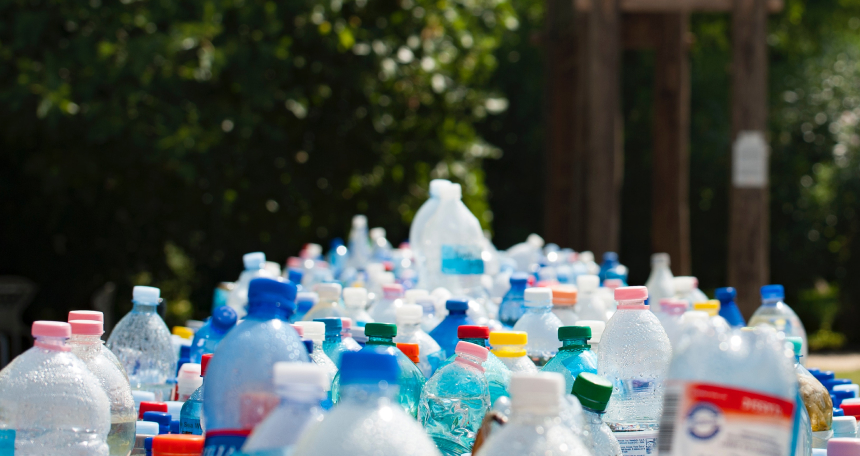

<!DOCTYPE html>
<html><!DOCTYPE html>
  <html lang="es">
    <head>
      <meta charset="UTF-8">
      <meta name="viewport" content="width=device-width, initial-scale=1.0">
      <title>Ecoactualizate</title>
      <link rel="shortcut icon" href="../assets/favicon.ico" type="image/x-icon">
      <link rel="preconnect" href="https://fonts.googleapis.com">
      <link rel="preconnect" href="https://fonts.gstatic.com" crossorigin>
      <link href="https://fonts.googleapis.com/css2?family=Montserrat:wght@200;300;400;500;600;700;800;900&amp;display=swap" rel="stylesheet">
      <meta http-equiv="X-UA-Compatible" content="IE=edge">
      <script defer src="../js/index.js" type="module"></script>
      <link rel="stylesheet" href="../css/noticias.css">
    </head>
  </html>
  <body>
    <!-- **************** Navbar **************** -->
        <section class="navbar-light">
              <div class="navbar-container container"><a class="branding" href="../">
                  <h3 class="h3 branding__title">Ecoactualizate</h3></a>
                    <button class="menu-toggler"></button>
                <nav class="nav-menu">
                  <ul>
                    <li><a class="link" href="../">Inicio</a></li>
                    <li><a class="link link--active" href="../actualizate/actualizate.html">Actualizate</a></li>
                    <li><a class="link" href="../noticias/noticias.html">Noticias</a></li>
                    <li><a class="link" href="../nosotros/nosotros.html">Nosotros</a></li>
                  </ul>
                  <div class="nav-menu__button"> <a class="btn btn-primary btn-md" href="../contribuir/contribuir.html">Contribuir</a></div>
                </nav>
              </div>
        </section>
    <!-- **************** Fin Navbar **************** -->
    <!-- ***************************** MAIN *****************************-->
    <main>
          <section class="noticia noticia--noticia">
                <div class="noticia-container container">
                  <div class="noticia__image"></div>
                  <div class="noticia-metadata noticia-metadata--noticia">
                    <div class="noticia-metadata__categoria noticia-metadata--noticia__categoria">
                      <p class="caption regular">Categoría</p>
                      <p class="body bold">Reciclaje</p>
                    </div>
                    <div class="noticia-metadata__fecha-publicacion noticia-metadata--noticia__fecha-publicacion">
                      <p class="caption regular">Fecha publicación</p>
                      <p class="body bold">22 Ago 2021</p>
                    </div>
                    <div class="noticia-metadata--noticia__url" href="https://www.efeverde.com/noticias/reciclaje-botellas-pet-fabricacion-sostenible-neumaticos/">
                      <p class="caption regular">Fuente</p><a class="body bold" href="https://www.efeverde.com/noticias/reciclaje-botellas-pet-fabricacion-sostenible-neumaticos/">https://www.efeverde.com/noticias/reciclaje-botellas-pet-fabricacion-sostenible-neumaticos/</a>
                    </div>
                  </div>
                  <div class="noticia__content">
                    <h3 class="h3 semi-bold">Nuevo reciclaje de botellas favorece fabricación sostenible de neumaticos</h3>
                    <p class="body regular">
            El reciclaje del plástico procedente de botellas PET sin los pasos químicos intermedios necesarios hasta ahora permitirá reemplazar el poliéster convencional de las carcasas de los neumáticos por uno más sostenible a partir de 2022, ha informado este jueves en un comunicado la empresa de neumáticos Continental.
            Según la nota, este proceso de reconversión del plástico permitirá usar “más de 60 botellas de PET recicladas” para la fabricación del juego completo de neumáticos de un vehículo, frente a los 400 gramos de hilo de poliéster convencional que se emplean tradicionalmente, lo que “implica el ahorro de valiosos recursos en la fabricación de neumáticos”.
            Para lograr ese resultado, primero se clasifican las botellas, a las que se les quitan los tapones y se limpian mecánicamente; posteriormente se trituran, funden y granulan; y finalmente se polimerizan en estado sólido y se realiza un proceso de hilado modificado.
            e trata de un nuevo método que permite hilar las fibras de poliéster sostenible sin tener que “descomponer previamente el material” como sucedía hasta ahora, ha afirmado en la nota el responsable de materiales, desarrollo de procesos e industrialización en el área de negocio de Neumáticos de Continental, Andreas Topp.
            El comunicado aclara que, hasta ahora, el uso de PET convencional para la producción de neumáticos respondía a sus propiedades, que permitían a este material mantener su forma a pesar de cargas o temperaturas elevadas, garantizando la seguridad de los ocupantes del vehículo.
            Sin embargo, explican que los resultados de las pruebas de laboratorio han reflejado que las fibras de la nueva materia prima secundaría ofrecen “el mismo rendimiento y la misma calidad” que el poliéster convencional, puesto que “su resistencia a la rotura y su estabilidad térmica” son igual de estables y adecuadas.
            Este avance supone “un paso más hacia la economía circular”, que la compañía pretende alcanzar por completo en 2050, fecha que señala como el límite para que sus neumáticos empleen un 100 % de materiales sostenibles.
            </p>
                  </div>
                  <div class="noticia-btns"><a class="noticia-btns__left btn btn-lg btn-secondary" href="../noticias/noticia4.html">
                      <p class="body bold">Ir a la anterior</p></a></div>
                </div><a class="noticia__back-btn" href="../noticias/noticias.html"></a>
          </section>
    </main>
    <!-- ***************************** FIN MAIN ***************************** -->
    <!-- ***************************** FOOTER *****************************-->
    <footer>
            <section class="footer">
              <div class="footer-container container">
                <div class="footer-social">
                  <h3 class="h3 h3-upper extrabold">EL FUTURO NO ES DESECHABLE</h3>
                  <div class="footer-social__container"><a href="https://api.whatsapp.com/send?phone=3002047922"></a><a href="mailto:sofiatobon2020@gmail.com"></a></div>
                </div>
                <div class="footer-branding"><a class="footer-branding__container" href="#">
                    <p class="body bold">Ecoactualizate</p></a><a class="btn btn-primary btn-sm" href="../contribuir/contribuir.html">Contribuir</a></div>
              </div>
            </section>
    </footer>
    <!-- ***************************** FIN FOOTER ***************************** -->
  </body>
</html>